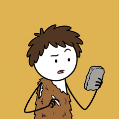

Humans Back Then Uploader is a private tool used only by the owner of the YouTube channel Humans Back Then. It uploads the channel's own videos, sets their titles, descriptions, subtitles and thumbnails, and reads the channel's own analytics and comments.
It is not offered to the public and has no sign-up.